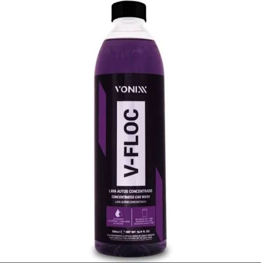
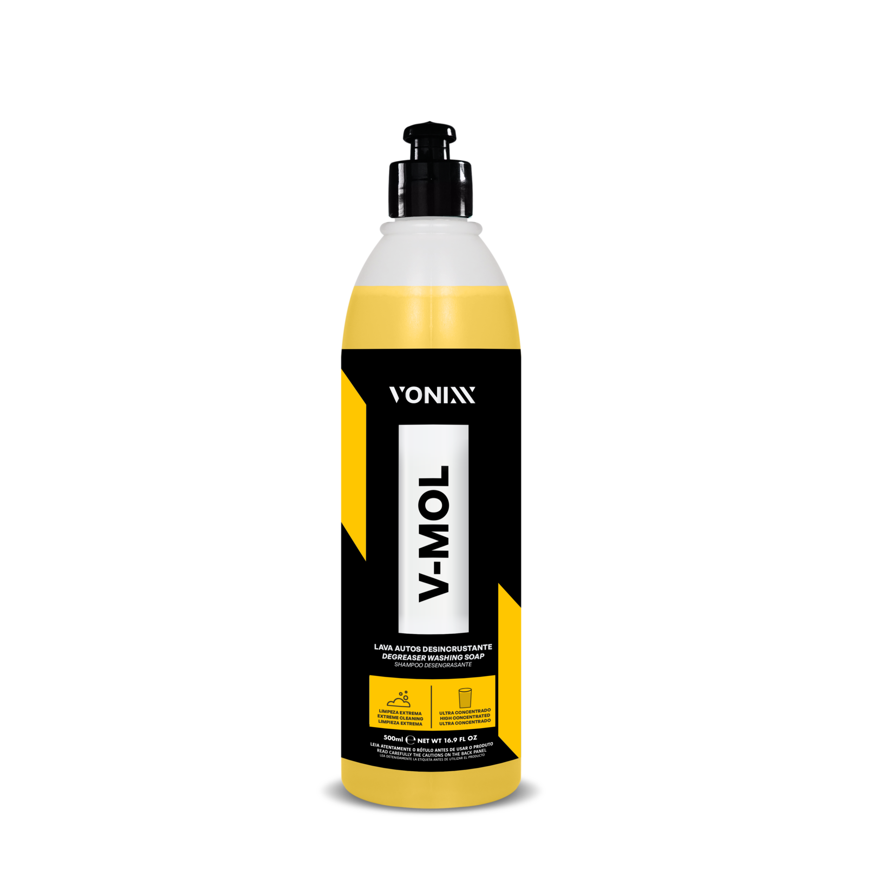
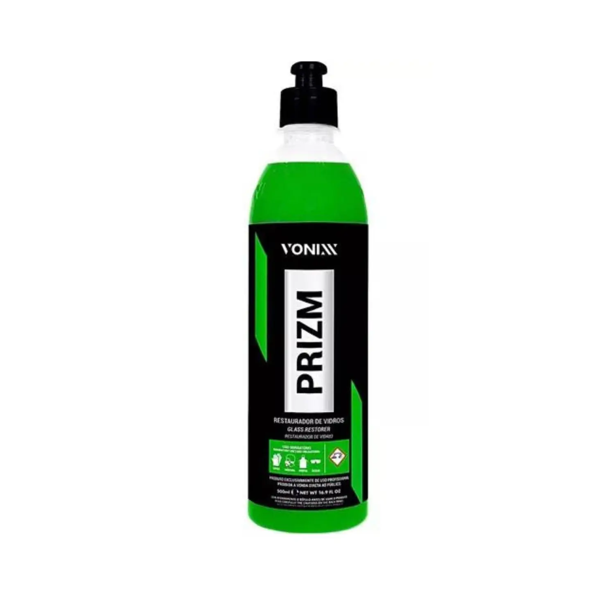

V-Floc
O V-FLOC da Vonixx é um shampoo automotivo superconcentrado de alta performance, ideal para quem busca eficiência e cuidado na lavagem de veículos. Com pH neutro, sua fórmula contém agentes condicionadores e tensoativos especiais que proporcionam uma limpeza suave e eficaz, sem agredir a pintura.
V-Mol
O V-MOL da Vonixx é um desengraxante automotivo de alta performance, desenvolvido especialmente para remover sujeiras pesadas, como graxa, óleo e resíduos incrustados. Sua fórmula equilibrada permite uma limpeza eficaz de motores, caixas de roda, chassis e outras partes com alto acúmulo de sujeira, sem agredir plásticos, borrachas ou a pintura do veículo. Versátil e eficiente, o V-MOL é ideal tanto para uso profissional quanto para entusiastas que buscam resultados superiores na higienização automotiva.
Prizm
O Prizm da Vonixx é um selante automotivo de alta tecnologia, desenvolvido para proporcionar uma proteção duradoura à pintura do seu veículo. Com uma fórmula avançada, ele cria uma camada de proteção que repeli a água, sujeira e contaminantes, mantendo o brilho e a aparência do carro por mais tempo. Ideal para ser aplicado em veículos que buscam um acabamento perfeito, o Prizm oferece alta resistência aos raios UV e protege contra os danos causados por poluição e intempéries. Seu uso garante uma superfície lisa e de fácil manutenção, proporcionando não só estética, mas também a preservação da pintura de maneira eficiente e prática.